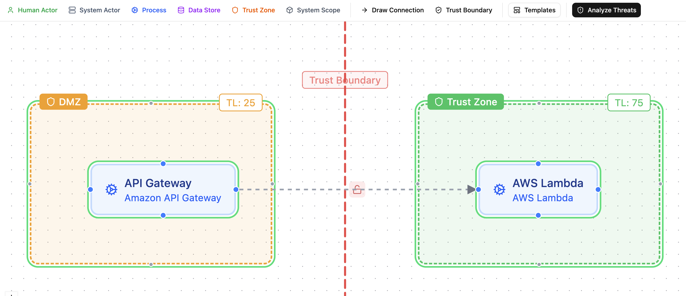
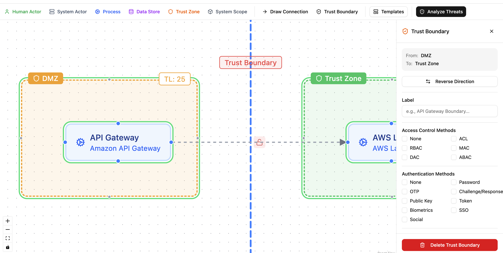
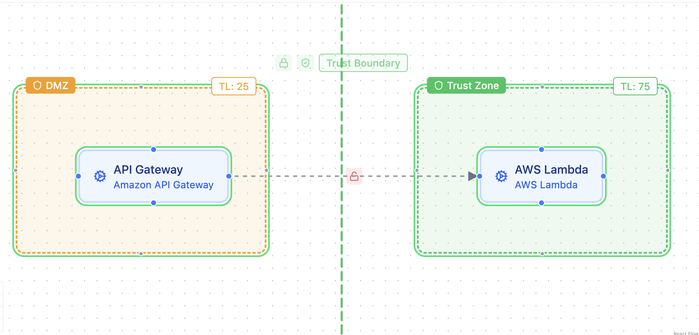

Zones and Boundaries¶
Zones group the components of a system by where they sit: a network segment, a physical site, a tenant, a trust level. Boundaries join two zones and record what a crossing has to satisfy. Both follow the CycloneDX 2.0 TM-BOM vocabulary, so what you draw in the DFD editor is what the export contains.
This page replaces the older Zone Protections feature. Countermeasures are no longer inherited across zones; a countermeasure now has a scope of its own, described in Platform Controls.
Zones¶
A zone is a container node in the DFD editor. Drag components into it to assign them. Zones can be nested to model layered architectures, for example a Database Tier zone inside an Internal zone, or Purdue levels 0 to 3 inside an OT Network zone.

Select a zone to edit it in the side panel:
| Field | Meaning |
|---|---|
| Name | Shown on the canvas and in the threat analysis tree |
| Type | One of the thirteen zone types below. The default is trust. The canvas shows a small type badge |
| Trust level | Optional, 0 to 100. Shown for trust and network zones only. A new zone starts at 50; choose Not set when you do not want to claim a level |
| Color | Canvas color only |
Zone types¶
| Type | Use for |
|---|---|
trust |
A region with one level of trust, the default |
network |
A network segment, VLAN, VPC, or a Purdue level |
physical |
A site, building, or room |
geographic |
A country or region, for data residency |
logical |
A grouping that exists in software only |
organizational |
A team, department, or company boundary |
tenant |
One tenant of a shared platform |
deployment |
A deployment environment such as production or staging |
availability |
An availability zone or failure domain |
compliance |
A regulated scope such as a cardholder data environment |
data |
A data domain or classification scope |
functional |
A functional area of the system |
process |
A business process boundary |
The type comes from the specification; there is no custom zone type. A file from another tool that carries a custom type object is imported with the default type, the original object is kept, and it is written back on export as long as you have not picked a different type.
Trust level¶
The trust level says how much the system trusts what runs inside the zone. Lower is less trusted:
| Range | Export value | Example |
|---|---|---|
| 0 to 25 | untrusted | Public internet, anonymous users |
| 26 to 50 | semi-trusted | DMZ, partner networks |
| 51 to 75 | trusted | Internal services, authenticated users |
| 76 to 100 | highly-trusted | Databases, secrets, key stores |
A level that is not set is exported as absent. Nothing guesses a level for you: there is no default of 75 any more, and a template that wants a level sets it explicitly.
Boundaries¶
A boundary joins two zones. Create one in boundary mode in the DFD editor: click Boundary, click the first zone, then the second. Two boundaries between the same two zones are allowed, for example a network boundary and a trust boundary on the same pair.
A new boundary starts with nothing recorded and appears as a red dashed line. (The line turns blue while the boundary is selected and its panel is open.)

Click the boundary to open its panel.
| Field | Where | Meaning |
|---|---|---|
| Label and description | Panel | Shown on the canvas and in the tree |
| Type | Panel | One of trust (default), network, physical, data, functional, organizational, process |
| Authentication | Panel | The methods a crossing must authenticate with; see the rules below |
| Authorization | Panel | The access control models applied at the crossing: rbac, abac, acl, mac, dac, pbac, rebac, radac, capability, or none |
| Session settings | Panel | Whether the access token expires and its TTL, whether a refresh token exists, whether it expires and its TTL, and whether the user and the system can end the session |
| Data is validated when crossing | Advanced | Data crossing the boundary is validated |
| Crossings are logged | Advanced | Crossings are logged |
| Crossings are monitored | Advanced | Crossings are monitored |
| Rate limit | Advanced | The rate limit policy as text, for example 100 requests per minute. Blank means none |
Three more fields have no control in the panel. They are kept from an import and written back unchanged: data transformation, the allowed protocols, and the idle and absolute session timeouts.
Crossing requirements: the none rule¶
Authentication and authorization are lists. The specification's own lists include the value none, so three states exist:
- Required: the list is not empty and does not contain
none. The boundary demands authentication (or authorization). - Explicitly none: the list is
["none"]. The boundary states that no authentication (or authorization) happens at the crossing. - Not recorded: the list is empty. Nothing is claimed.
none cannot be combined with other values; a mixed list is refused in the panel and in the API, and an import that carries one stores an empty list and warns. One helper answers "is authentication required" on the backend and in the browser, and every reader uses it, so the canvas color, the report, and the pentest scope agree.
The authentication picker offers the specification's values (oauth2, oidc, jwt, mtls, certificate, api-key, hmac, saml, kerberos, fido2, session-cookie, and the rest) plus any custom name you type. Where the method is known, use the real value.
The boundary line is colored from these answers:
- Red: neither authentication nor authorization is required.
- Amber: one of the two is required.
- Green: both are required.

The color says whether something is recorded, not how strong it is. A boundary with basic authentication looks the same as one with mtls.
Data validation, logging, monitoring¶
These are plain yes or no answers, off by default. They are exported only when they are on, so an untouched boundary makes no claim about them.
How flows cross boundaries¶
A flow crosses a boundary when a boundary exists whose two zones hold the flow's two ends on opposite sides. Each end may sit in the zone itself or in a zone nested inside it. Precogly works this out whenever a diagram is saved and shows it as Crosses boundary in the flow panel.
Two ends in different zones is not enough on its own: with nested zones that is true even when no boundary is drawn. Draw the boundary, and the flows that cross it are marked.
Flows have their own type and their own authentication list, with the same none rule. See DFD Editor.
Zones and boundaries in threat analysis¶
A threat can target a zone or a boundary directly, as well as components and flows. The threat analysis tree lists zones (nested as on the canvas) with their components and their own threats, and a Boundaries group per blueprint. A countermeasure can be scoped to a zone or boundary through Applies to. See Threat Analysis.
Target a zone when the threat spreads across it or affects everything in it, such as ransomware moving through a corporate intranet. When a threat starts at or affects one element, such as a flaw in a load balancer in the DMZ, target that component, flow or boundary instead.
What the export contains¶
Each zone is exported with its type and, when set, a precogly:trust-level property. Each boundary is exported with its type, crossingRequirements, and sessionManagement. For every boundary of type trust, the export also writes a trustBoundaries entry under threats, listing the scenarios that target the boundary and the controls scoped to it. Its trustLevel is written only when both zones have a level, and is then the lower of the two by the ranges above. With one side unset the entry has no trust level, because guessing from the known side could label an Internet to DMZ boundary as highly trusted.
See Importing and Exporting for the full mapping.